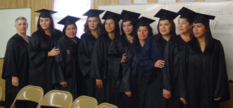

Nine Outstanding Women Graduate Our ESL Program! Congratulations!

From left to right; Carol Joseph, instructor with Olga Sandoval, Claudia Juarez, Catalina Gonzalez, Sandra Guevara, Miriam Garcia, Ofelia Moctezuma, Herminia Suarez, Irene Huerta, Veronica Rivera.
Nine participants in the Advocacy Outreach Family Literacy Program completed the highest level of English as a Second Language and graduated from the program. They represented more than one third of the entire class of English Language Learners and they also represent the largest graduating group from the Advocacy Outreach Family Literacy
Program—ever!All the graduates were parents of young children. They attended a rigorous schedule of 15 hours per week of classes which included English Literacy, parenting workshops, and interactive sessions with their children where they helped their children develop academic skills. Participants estimated that they also spent an additional ten hours per week on homework. The intensive schedule paid off and all nine exceeded the highest level, Advanced English as a Second Language, as measured by the state mandated assessment, Basic English Skills Test.
A ceremony with caps and gowns was held at the Manor Excel Academy on May 29, 2014, followed by a celebratory luncheon which was attended by classmates, husbands, teachers and children. They have all expressed their intention to continue studying and finding
opportunities to speak English.
Sandra is looking for a job to help support the financial needs of two of her sons who are going to college. Miriam has a career goal of becoming a social worker. Five of the graduates have jobs now. Some are working directly with the public in stores and restaurants, using their newly acquired fluency in English to communicate with patrons.
Others have taken the lessons they learned in Financial Literacy sessions to develop entrepreneurial businesses of their own. They are assets to their community and to their families. They all reported more involvement with their children’s schooling—they met with teachers and discussed their children’s progress, learned how to set up study spaces
within their homes and supervised their children’s homework sessions.
Their instructor, Carol Joseph, reminded them that they have achieved what only a small percentage of adults in the United States have achieved: bilingual fluency. The ability to communicate effectively in two languages—English and Spanish—is an undeniable asset in the culture in which we live and work. Advocacy Outreach congratulates its graduates and encourages them to continue learning and continue to set high goals for themselves.